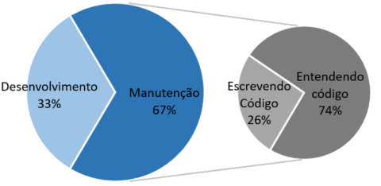

Construir software é uma atividade complicada e desafiadora. Manter e evoluir um software pode ser tão complicado quanto construí-lo. À medida que o software evolui, o mesmo é modificado e adaptado a novos requisitos, tornando-se mais complexo e se desviando da arquitetura original. Por isso, a maior parte dos custos do desenvolvimento de um software é a sua manutenção. Nesse período, a maior parte do tempo é gasta tentando entender o sistema, explorando código desconhecido, conforme é mostrado no gráfico abaixo.
Quando, mesmo depois de muito tempo de análise, o desenvolvedor não consegue entender um código e não há documentação ou ela é pobre, ele acaba reescrevendo-o, o que facilita a inserção de defeitos e de mudanças indesejadas no comportamento do sistema.
Por isso, além de projetarem e manterem uma boa arquitetura, os desenvolvedores devem se esforçar para escreverem códigos claros e legíveis. O primeiro passo para isso é reconhecer que o código-fonte é uma forma de documentação. Ele tem que ser capaz de dizer o que faz de forma clara. O sistema deve ser construído de forma que outros desenvolvedores o compreendam facilmente. Nesse contexto, serão discutidas ao longo deste artigo algumas práticas que viabilizam o melhor entendimento de um software.
Segundo a metodologia ágil, o código-fonte é a principal forma de documentação do software, pois é a única suficientemente detalhada e precisa. Logo, se sua legibilidade não estiver boa, os custos com manutenção, evolução e retrabalho aumentam. Mas como escrever um código claro, limpo e de fácil entendimento? Não é simples, mas algumas recomendações básicas podem ajudar, como as citadas a seguir.
Dê nomes significativos para variáveis, métodos e classes (mesmo que fiquem longos). Se o nome da classe ou método descreve o que ele faz e se o nome do campo informa o que ele contém, não é necessário escrever um comentário para dar essa informação. A ideia é que, ao ler o nome de uma variável ou método já possamos entender o que ele faz. Abaixo, são mostrados dois exemplos de código onde a mesma declaração de variável é feita de formas diferentes.
Código ruim:
int d; // tempo decorrido em dias
Código bom:
int tempoDecorridoEmDias;
Métodos grandes são difíceis de ler e entender, principalmente se ele tem mui-tas responsabilidades. Escreva pequenos métodos, mesmo que eles tenham apenas 3 ou 4 linhas. Cada método deve ter apenas uma responsabilidade e seu nome deve descrevê-la. Quando fica difícil escolher um nome descritivo para um método, provavelmente ele está grande ou fazendo mais de uma coisa. Se um método ficou grande, extraia cada funcionalidade em métodos menores.
Ao escrever um código, tenha em mente a possibilidade do mesmo ser reutilizado em outra parte do próprio sistema ou em outros sistemas, inclusive, podendo ser salvo em um repositório de componentes de software. Logo, as classes e métodos devem estar desacopladas o máximo possível. Não tenha preguiça de criar novas classes! Novos assuntos e novas funcionalidades demandam novas classes e novos métodos.
Umas das formas de saber, no geral, o que está sendo feito no projeto é acompanhar os logs de versão. A equipe pode se informar rapidamente sobre o que cada membro da equipe está fazendo. Os logs auxiliam na identificação do ponto onde um defeito foi inserido. São usados para registrar marcos para publicação nos servidores. São também fundamentais quando há a necessidade de voltar para uma versão onde determinada funcionalidade foi alterada.
Todas as vantagens citadas acima ficam comprometidas quando os logs de commit não são feitos ou não são significativos. Por isso, os commits devem ser feitos, preferencialmente, por tarefa, com descrições sucintas e significativas nos logs. Isso mantém os códigos separados e auxilia o entendimento das classes e arquivos relacionados a determinada funcionalidade. Nesse sentido, um commit deve ser feito com cuidado, observando cada classe alterada, descartando alterações desnecessárias e assegurando que não causará quebra do build.
Um código limpo informa o que ele faz, mas dificilmente deixa claro qual sua intenção e o porquê foi feito daquela maneira. Para isso, pode-se contar com os comentários, que é um recurso importante para complementar o entendimento do código.
O código está complicado? Primeiro, tente descomplicar, e então comente! Existem algoritmos com fórmulas, otimizações e cálculos mais complexos do que o normal. Nesses casos, códigos limpos e nomes significativos podem não ser suficientes.
Existem comentários especiais como "TODO" e "FIXME", usados para registrar lembretes para tarefas futuras de melhorias e correções. Use-os quando houver um código incompleto, incorreto ou que pode ser melhorado, mas não há tempo de fazê-lo no momento.
Use os comentários também para inserir referências que forneçam mais informações sobre o algoritmo escolhido. Se existe um sistema de controle de tarefas, informe o link para a tarefa relacionada ao código. Usou um algoritmo de algum artigo científico? Reusou um algoritmo de alguma plataforma ou site? Informe a fonte nos comentários.
Considerar o código-fonte como a principal forma de documentar não significa que podemos abandonar documentação externa. A documentação de um software inclui todos documentos descrevendo o sistema, desde a especificação de requisitos até plano de testes finais.
Em suma, é de grande importância cuidar para que colegas de equipe e futuros mantenedores consigam entender o que você codifica. Aproveite as oportunidades de outras pessoas lerem seu código. Descubra o que as pessoas acharam fácil de entender e o que elas acharam confuso. Afinal, código limpo e bem documentado facilita a manutenção, reduzindo custos, estresse e economizando tempo!
[1] Andrew Ko; Brad Myers; Michael Coblenz; HtetHtet Aung. An Exploratory Study of How Developers Seek, Relate, and Collect Relevant Information during Software Maintenance Tasks. IEEE. p. 971-987. 2006.
[2] Stephen Schach. Object-Oriented and Classical Software Engineering. McGraw-Hill, New York, USA. 2006.